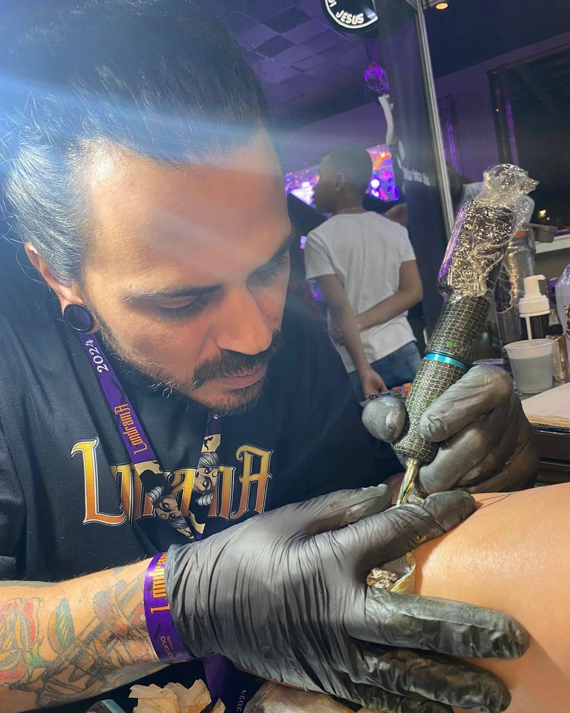

André Ricardo
Realismo · floral · blackwork
Ver portfólio
Di Jesus Tattoo
Old school · pontilhismo · geometria
O Gustavo vai do old school colorido, de traço firme e cor chapada, às mandalas e geometrias feitas inteiras em pontos.
Também faz tribal, blackwork e lettering, e de tempos em tempos abre Flash Day com desenhos a preço reduzido.
2º lugarPontilhismo na Londrama Tattoo 2025, com costas fechadas em 15 horas de pontos.
Trabalhos recentes do Gustavo no Di Jesus. Toque numa foto para ver grande e, se quiser um parecido, é só pedir.
Preencha em um minuto e o pedido chega pronto no WhatsApp dele.
Conte o que quer, o local do corpo e o tamanho.
Mande fotos e referências no WhatsApp.
Gustavo passa o valor e o tempo de sessão.
Você escolhe a data e o desenho fica pronto.
Realismo · floral · blackwork
Ver portfólioRealismo preto e cinza · cobertura
Ver portfólioBody piercing
Ver portfólio